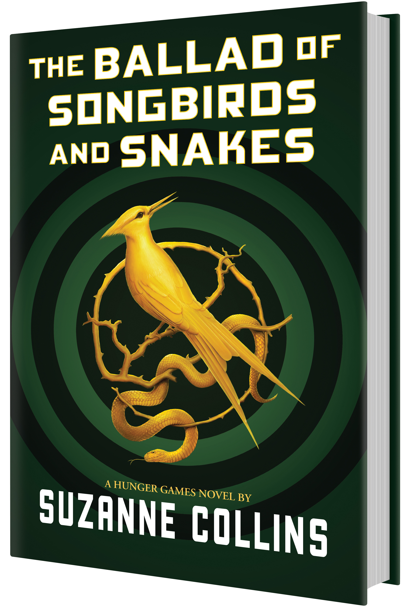

Achievements & Awards
Suzanne Collins is an American television writer and novelist. She is the author of the bestselling series The Underland Chronicles and the wildly successful Hunger Games trilogy, which spawned the Lionsgate film The Hunger Games (2012) and three subsequent announced sequels, The Hunger Games: Catching Fire (2013), The Hunger Games: Mockingjay - Part 1 (2014), and The Hunger Games: Mockingjay - Part 2 2015 (Ribeiro, 2016).
One of the most successful written works in history, Suzanne Collins' The Hunger Games trilogy has found an audience with readers of all ages - publisher Scholastic announced there were over 50 million Hunger Games books in print by the time the first film was released in 2012.
"Hope is the only thing stronger than fear"
Suzanne Collins

The Hunger Games: The Ballad of Songbirds and Snakes
✽ A BARNES & NOBLE BEST YA SCIENCE FICTION AND FANTASY BOOK OF 2020
✽ AN AMAZON BEST SCIENCE FICTION AND FANTASY BOOK OF 2020
✽ A NEW YORK TIMES EDITORS' CHOICE
✽ WATERSTONES BEST BOOKS OF 2020: SCIENCE FICTION & FANTASY
✽ COSMOPOLITAN'S 20 BEST YA BOOKS OF 2020
✽ TODAY'S BEST YA BOOKS OF 2020
✽ 2021 KIDS' BOOK CHOICE AWARDS FINALIST BEST FANTASY WORLD BUILDER
— Major Awards —
✽ Andre Norton Award (2011) — Mockingjay (Scholastic Press; Scholastic UK) — finalist
✽ Bram Stoker Awards (2013) — The Hunger Games (by Gary Ross, SC & Billy Ray)
✽ Ray Bradbury Award (2013) — The Hunger Games (by Gary Ross, director; Gary Ross, SC & Billy Ray, writers)
— Other Awards —
✽ Geffen Awards —
(4 nominations; 4 wins)
✽ The Ballad of Songbirds and Snakes (2021) — winner
✽ Mockingjay (2013) — YA sf or fantasy book — winner